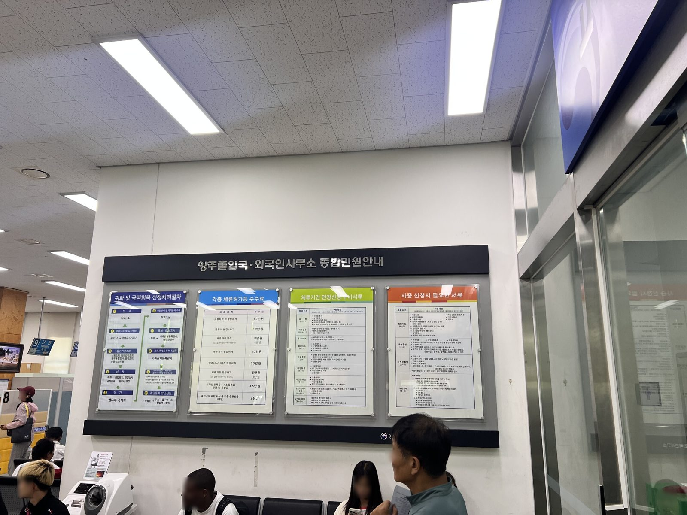

"외국인 근로자도 국민연금을 돌려받을 수 있나요?" 비전문취업(E-9), 방문취업(H-2), 연수취업(E-8) 자격으로 일한 근로자는 국적과 무관하게 본국 귀환 시 반환일시금을 받을 수 있습니다. 납부한 보험료에 이자를 더한 금액이 지급되며, 이미 출국한 경우에도 대리인을 통하여 청구하고 본국 계좌로 지급받을 수 있습니다.

반환일시금의 지급 대상
원칙적으로 외국인에 대한 반환일시금은 본국이 한국인에게 같은 급여를 지급하는 경우(상호주의)이거나 양국 간 사회보장협정이 있는 경우에 지급됩니다.
다만, 체류자격이 비전문취업(E-9), 방문취업(H-2), 연수취업(E-8)인 근로자는 이러한 요건과 무관하게 본국 귀환 시 반환일시금을 받을 수 있습니다. 국적이나 상호주의 여부는 문제 되지 않으므로, 해당 자격으로 근무한 이력이 있다면 청구 대상에 해당합니다.
지급액의 구조
반환일시금은 납부한 연금보험료에 이자를 더하여 지급됩니다. 국민연금 보험료율은 기준소득월액의 9%(본인 4.5%, 사용자 4.5%)입니다(2026년 기준). 예컨대 월 기준소득 250만 원으로 4년 10개월을 근무한 경우를 상정하면 다음과 같이 계산됩니다.
| 월 기준소득 | 250만 원 |
| 보험료율 | 9%(본인 + 사용자, 2026년 기준) |
| 월 납입액 | 약 22만 5천 원 |
| 납입 기간 | 58개월 |
| 납입 원금 | 약 1,305만 원 |
| 지급액 | 이자 가산 후 약 1,350만 원 |
위 금액은 상정에 따른 추정치입니다. 실제 금액은 기준소득월액과 실제 가입 개월 수, 적용 이자율(3년 만기 정기예금 이자율 기준)에 따라 달라지며, 정확한 금액은 국민연금공단의 가입 내역으로 확인됩니다.
출국 후의 청구와 소멸시효
반환일시금은 출국 전에 청구할 수 있고, 이미 본국으로 귀환한 경우에도 청구하여 본국 계좌로 지급받을 수 있습니다. 본인이 한국에 다시 오기 어려운 때에는 대리인을 지정하여 청구를 진행할 수 있습니다.
다만, 청구에는 기한이 있는 점을 유의하여야 합니다. 지급 사유(출국)가 발생한 날부터 5년 이내에 청구하여야 하며, 이 기한이 지나면 소멸시효로 청구권이 소멸합니다.
가입 이력이 단순하지 않은 경우의 판단
예컨대 E-9로 수년간 근무한 뒤 다른 체류자격으로 변경하여 체류하다가 출국한 경우를 상정하면, 지급 대상 여부와 금액을 일반 기준만으로 판단하기 어렵습니다. 반환일시금의 특례는 체류자격을 기준으로 적용되는데, 가입 기간 중 자격과 사업장이 여러 차례 바뀐 경우 이력의 확인과 산정이 단순하지 않기 때문입니다.
이러한 사안에서는 1) 기간별 체류자격과 가입 이력 2) 사업장별 납부 내역 3) 출국일과 경과 기간 4) 본국의 사회보장협정 적용 여부가 함께 검토되며, 이에 따라 결론이 달라질 수 있어 사안별 검토가 필요합니다.
청구 준비의 순서
위 내용을 종합하면, 먼저 국민연금공단의 가입 내역으로 본인의 납부 기간과 예상 금액을 확인하시고, 출국 전이라면 출국 일정에 맞추어 청구를 준비하시며, 이미 출국하신 경우에는 출국일부터 5년의 기한이 지나기 전에 대리 청구를 진행하시는 것이 적절할 것으로 보입니다.
자주 묻는 질문
법무법인 로연 출입국이민지원센터는 법무법인 로연의 출입국·이민 분야 업무 특화 센터로, 체류자격·사증 업무와 형사 사건, 출입국 사범심사 대응을 함께 다룹니다.
센터는 민준우, 남도현, 김승철 변호사와 안태민 센터장의 협업 체제로 운영되며, 출국 전후의 행정 청구와 체류 문제를 함께 검토합니다.
본 글은 일반적인 제도 안내를 목적으로 작성되었으며, 개별 사안에 대한 법률 자문이 아닙니다. 체류자격에 관한 판단은 체류 이력, 소득, 계약 관계 등 구체적 사실관계에 따라 달라질 수 있습니다. 개별 사안의 검토가 필요하신 경우 법무법인 로연 출입국이민지원센터(lawyeonvisa.app)로 상담을 신청하실 수 있습니다.